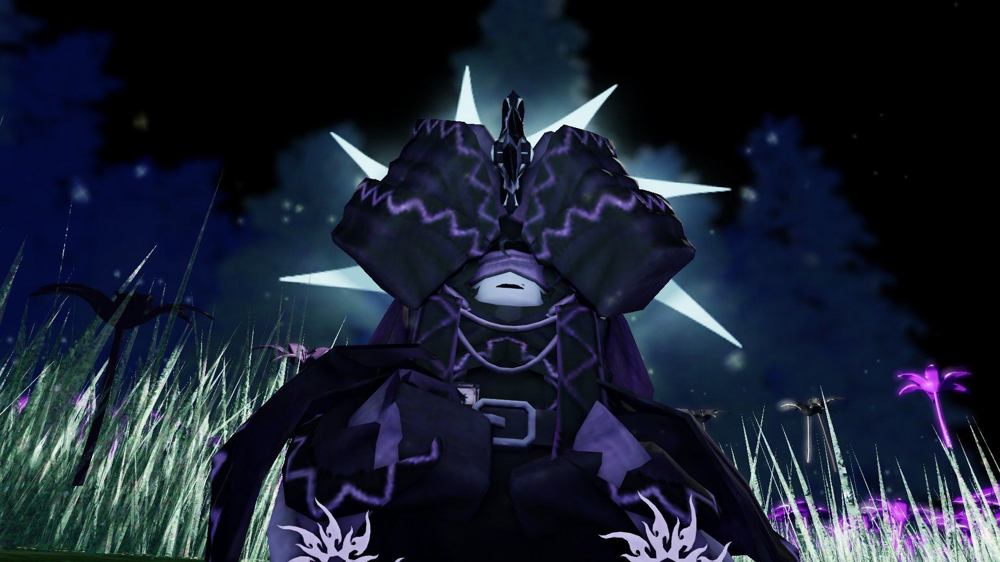
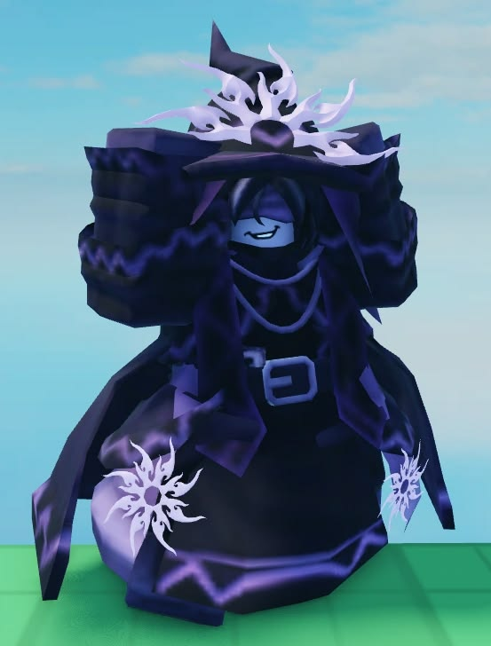

Play Forsaken (main Two Time, prefer Milestone IV / Nightshade), do Linux packaging, and play War Thunder. Thinking about AzureTime Linux based on openMamba.
Two Time was part of the Spawn cult (family home for the reborn). They and Azure (Aspen) were close. Azure discovered the truth about the cult and wanted to leave. Two Time, under Amarah’s influence, used the Ghostfire Dagger to sacrifice Azure in a field of nightshade.
No real second life happened. Later, the Spectre pulled both of them into Forsaken. Two Time received a false respawn ability, while Azure was turned into Azurewrath.
Milestone IV wears the hat and nightshade aesthetic — closer to what remained after that event.
// LMS (Unofficial): And before death they talked (by Prism_lol)